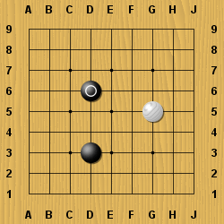
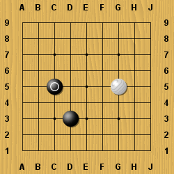
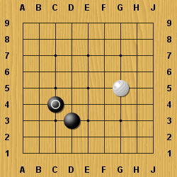

Съдържание
Съдържание Това се нарича двоен скок( или никен тоби). Въпреки че ви дава повече влияние на дъската, но са със по слаба връзка от единичният скок и е по лесно да бъдат прекъснати.
Също така има и троен скокове и четворни.
Тези големи скокове се използват най-често в началото на играта.
 Този скок се казва Конски ход (или кейма) - както при шаха.
Конските ходове са често използвани при ограждането на ъгъл, както е показано от ляво.
Това е косуми - диагонален ход.
Двата камъка са теоретично свързани но са бавни, защото скока е по-малък в сравнение с предните, които разгледахме.
 Следващ урок
Следващ урок Home
Home